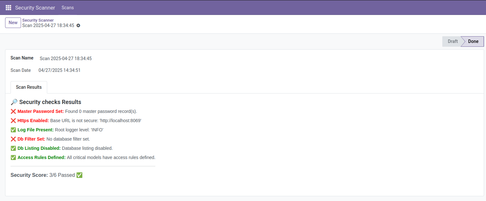
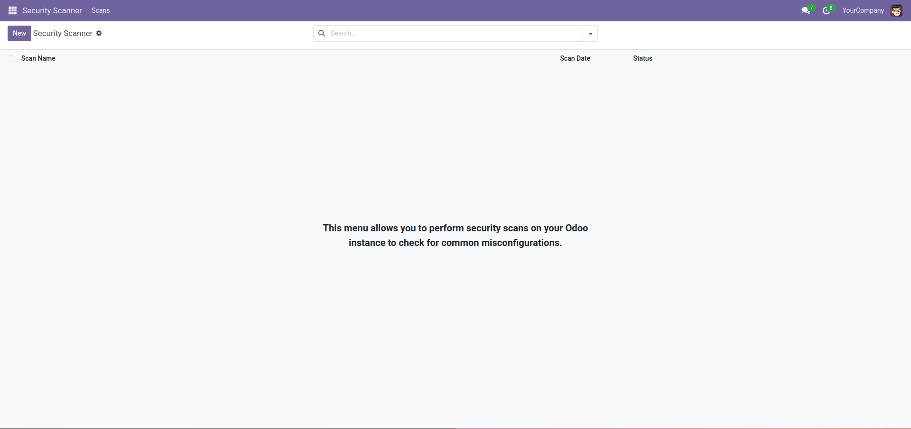
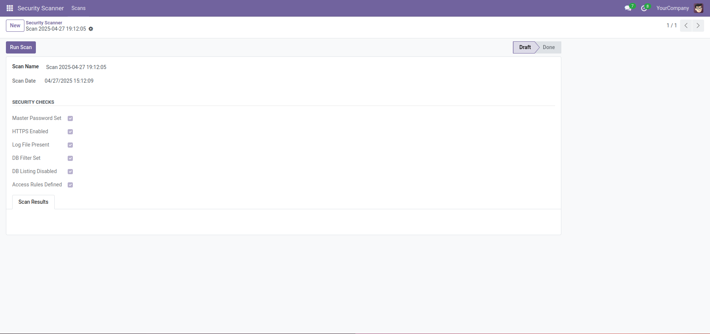
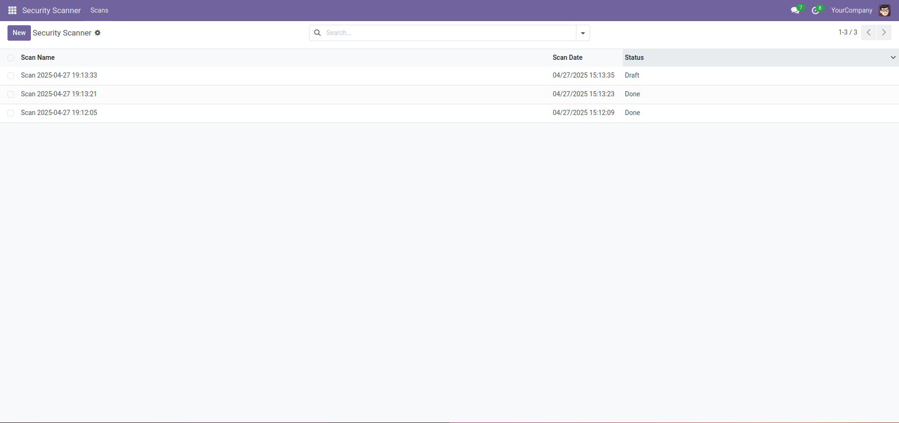

Odoo Security Scanner Suite
Developer: Odevmo - Odoo Security Specialist
Secure your Odoo instance with confidence. The Security Scanner Suite is an essential tool for Odoo administrators and developers who care about maintaining strong, reliable security configurations. Developed by Odevmo, a trusted name in Odoo security development, this suite offers automated scanning, clear reporting, and peace of mind — all from within your Odoo environment.
🔒 Core Features
- Master Password Validation – Ensure your database is protected at the system level.
- HTTPS Enforcement – Verify the secure setup of your instance’s external access.
- Access Rule Verification – Quickly detect missing access control rules.
- Logging Configuration Check – Validate logging level settings for audit readiness.
- Database Filtering – Enhance security in multi-database environments.
- Database Listing Control – Prevent unauthorized database visibility.
🚀 Easy to Use
- Simple UI – One-click scan execution from your Odoo backend.
- Formatted Results – Clean, modern HTML scan results with clear pass/fail icons.
- Instant Security Score – Understand your overall security posture at a glance.
🖼️ Main Screenshot

📷 Demo Screenshots



💡 Why Choose Odevmo?
Odevmo specializes exclusively in Odoo security, combining deep technical expertise with a passion for protecting mission-critical Odoo systems. Our goal is to deliver practical, high-impact tools that help you stay secure without unnecessary complexity.
📦 Installation
- Copy the
security_scanner_suite folder into your Odoo addons path.
- Restart the Odoo server.
- Install the app via the Apps menu.
📈 Roadmap
- Scheduled scans for continuous monitoring.
- Enhanced scan types (database, server environment).
⚖️ License
Licensed under the LGPL-3.0 license.